Code
if(!require(pacman)){install.packages("pacman"); library(pacman, quietly = T)}
p_load(knitr, lubridate, sf, tidycensus, tidygeocoder, tidyverse, tigris, tmap, viridis, ggplot2, gridExtra)
set.seed(5746)Eviction is a pressing issue in the city of Philadelphia. Every year, thousands of households receive eviction filings. Not only is this destabilizing for the households involved, but it contributes to neighborhood instability, weakened social networks, and other socioeconomic effects that ultimately contribute to inequities. We produced a model to predict evictions by tract in Philadelphia in order to help the City mobilize resources and proactively implement targeted policies that prevent evictions.
Our model uses eviction filing data for Philadelphia at the Census tract level, paired with crime, affordable housing, housing counseling, market value analysis, and Census data. We explore where and when evictions occur to build a svelte predictive model of monthly filings. We conducted exploratory data analysis after cleaning the data and joining it to 2020 Census tracts to examine spatial patterns of filings, temporal trends across the city, and differences across race-majority tracts. We then integrated multiple data sources to construct a panel dataset of monthly tract-level predictors from 2022 onward.
We estimated a series of linear regression models that predict monthly eviction filings. These linear regressions included factors such as baseline eviction filing (using pre-pandemic averages), demographic characteristics, crime levels, distance to housing counseling agencies, neighborhood market value clusters, and recent eviction history (lagged). Models were trained on data through December 2023 and evaluated on 2024 onward through MAE.
Generally, we found that adding socio-economic and neighborhood context modestly improves prediction accuracy. Incorporating recent eviction lags yields the strongest performance. However, the analysis also highlights key limitations: under-counting of sealed records, measurement error across data sources, and ethical concerns about predicting eviction risk for already-vulnerable communities.
if(!require(pacman)){install.packages("pacman"); library(pacman, quietly = T)}
p_load(knitr, lubridate, sf, tidycensus, tidygeocoder, tidyverse, tigris, tmap, viridis, ggplot2, gridExtra)
set.seed(5746)The primary dataset analyzed in this report was derived from the Evictions Lab’s Eviction Tracking System, which has been derived from county court records for cities such as Philadelphia that have a reasonably transparent and accessible system of data storage. As a result, the breadth of records that are often available is limited by government/judicial cooperation. Furthermore, many city-wide records were incorrectly geocoded at the time of creation and labeled as “sealed.” Therefore, evictions on average within this dataset are considered to be an underestimate of the true number of filings in Philadelphia This data is available at the census tract and zip code levels for Philadelphia between the years of 2020 and November of 2025 at monthly intervals.
# load evictions dataset to investigate
evictions_df <- read_csv("./data/philadelphia_monthly_2020_2021.csv", show_col_types = F)
evictions_df <- evictions_df %>%
filter(GEOID != "sealed")# generate vectors of all possible months and GEOIDs
months <- seq(as.Date("2020-01-01"),
as.Date("2025-11-01"),
by = "month") %>%
format("%m/%Y")
geoids <- unique(evictions_df$GEOID)
# expand a grid of GEOID/month combinations
geoids_months <- expand.grid(GEOID = geoids,
month = months,
stringsAsFactors = F)
# identify missing combinations
missing <- geoids_months %>%
anti_join(evictions_df %>% select(GEOID, month),
by = c("GEOID", "month"))
# print result
if (nrow(missing) > 0){
cat("Number of Missing GEOID/Month Combinations:", nrow(missing))
} else{
cat("No GEOID/Month Combinations Missing")
}No GEOID/Month Combinations MissingThe modeling strategy employed in this analysis relies on a panel dataset which has all combinations of census tract geographic identification numbers (geoids) and months. As of the 2020 Decennial Census and the subsequent realignment of census tract boundaries, Philadelphia County has 408 census tracts, with data spanning 71 months, resulting in 28,968 records. In anticipation of the availability of census data, which changed boundaries in 2020 and is only available up to 2023 (4 years total), the minimum year of evictions data considered in this analysis was 2022, reducing the overall number of records to 19,176 (-33.8%).
# designate FIPS codes for PA and Philly
fips_pa <- 42
fips_phl <- 101
# load tigris census tract boundaries
tracts <- tracts(state = 42, county = 101, year = 2020, progress_bar = F) %>%
select(GEOID) %>%
st_transform(2272)
# join to evictions dataset and make spatial
evictions <- left_join(evictions_df, tracts, by = "GEOID", ) %>%
st_as_sf() %>%
mutate(year = year(my(month)),
year_lag_census = year(my(month)) - 2)The evictions dataset does not include geometries, which instead can be derived from the Census Bureau’s TIGER/line shapefiles. The boundaries used were derived from the 2020 Decennial Census and joined to based on geoid.
# Create proper date format
evictions <- evictions %>%
mutate(
month_date = as.Date(paste0("01/", month), format = "%d/%m/%Y"),
delta = filings_2020 - filings_avg_prepandemic_baseline,
ratio = filings_2020 / filings_avg_prepandemic_baseline
)An average filing count calculated for before the COVID-19 pandemic were used to determine both a delta measure (difference from total filings in a month) and a ratio of filings in a month relative to this baseline. This was intended to indicate the relationship of filings at a given point in time to past trends.
# Total filings per tract
tract_totals <- evictions %>%
group_by(GEOID) %>%
summarise(total_filings = sum(filings_2020, na.rm = TRUE))
#Plot
ggplot(tract_totals) +
geom_sf(aes(fill = total_filings),
color = "white", linewidth = 0.2) +
scale_fill_viridis_c(option = "C") +
labs(
title = "Total Eviction Filings by Census Tract",
subtitle = "Cumulative filings across all years in the dataset",
fill = "Total Filings"
) +
theme_void()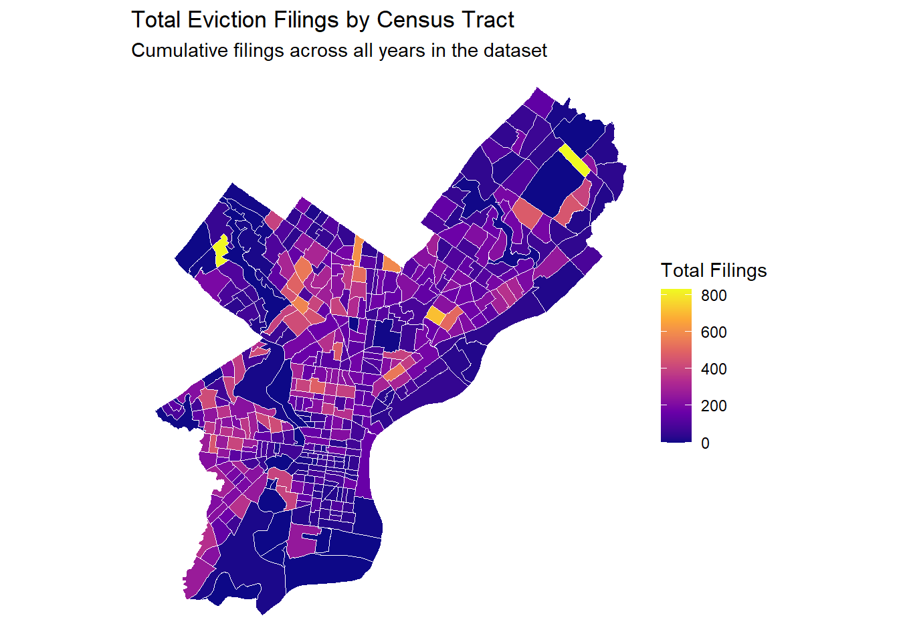
Total filings per census tract from 2022-2025 are distributed unevenly throughout Philadelphia, with West Philadelphia and North Philadelphia seeing far more evictions relative to more affluent areas of the city such as Center City and South Philadelphia. The greatest number of filings occurred in the Roxborough Neighborhood adjacent to the Wissahickon River, as well as on the northern edge of the Northeast Philadelphia Airport.
# Create monthly evictions
eviction_monthly <- evictions %>%
group_by(month_date) %>%
summarise(total_filings = sum(filings_2020, na.rm = TRUE))
# Plot total monthly evictions
ggplot(eviction_monthly, aes(x = month_date, y = total_filings)) +
geom_line(color = "#3182bd", linewidth = 1) + # blue line
geom_smooth(se = FALSE, color = "red", linetype = "dashed") + # red trend line
labs(
title = "Monthly Eviction Filings",
subtitle = "Tract-level eviction filings aggregated across the city",
x = "Date",
y = "Total Filings",
caption = "Source: Eviction Court Filings"
)`geom_smooth()` using method = 'loess' and formula = 'y ~ x'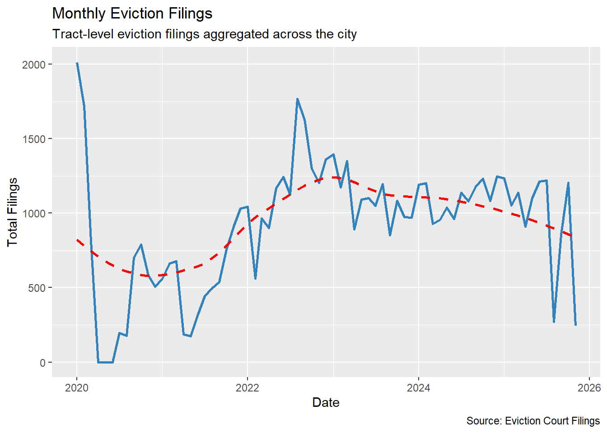
Total eviction filings were extremely high at the onset of 2020 as a consequence of the COVID-19 pandemic, before plummeting sharply in the middle of the year. They continued to rise into 2023, and have been on a steady decline since. These rates fluctuate at times significantly from the trendline over time, but they do not appear to follow a seasonal or annual pattern.
# Create monthly evictions
# Filings_2020 = total eviction filings
ggplot(evictions %>% filter(filings_2020 <= 50),
aes(filings_2020)) +
geom_histogram(bins = 30, fill = "steelblue") +
labs(title = "Distribution of Monthly Filings per Tract (<= 50)",
x = "Filings", y = "Count")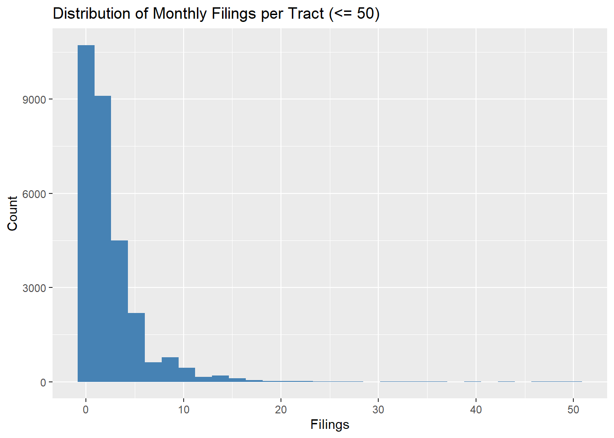
# Distribution of Delta
ggplot(evictions, aes(delta)) +
geom_histogram(bins = 30, fill = "purple") +
labs(
title = "Delta: Filings vs Pre-Pandemic Baseline",
x = "Delta",
y = "Count"
)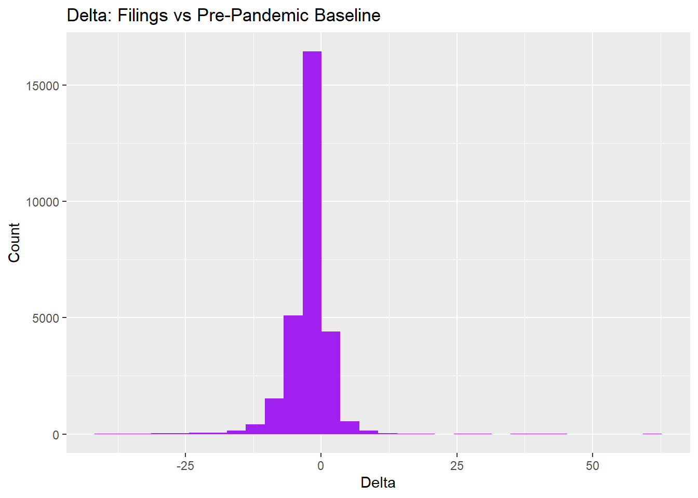
# Distribution of Ratio
ggplot(evictions, aes(ratio)) +
geom_histogram(bins = 30, fill = "darkgreen") +
labs(
title = "Ratio of Filings to Baseline",
x = "Ratio",
y = "Count"
)Warning: Removed 1888 rows containing non-finite outside the scale range
(`stat_bin()`).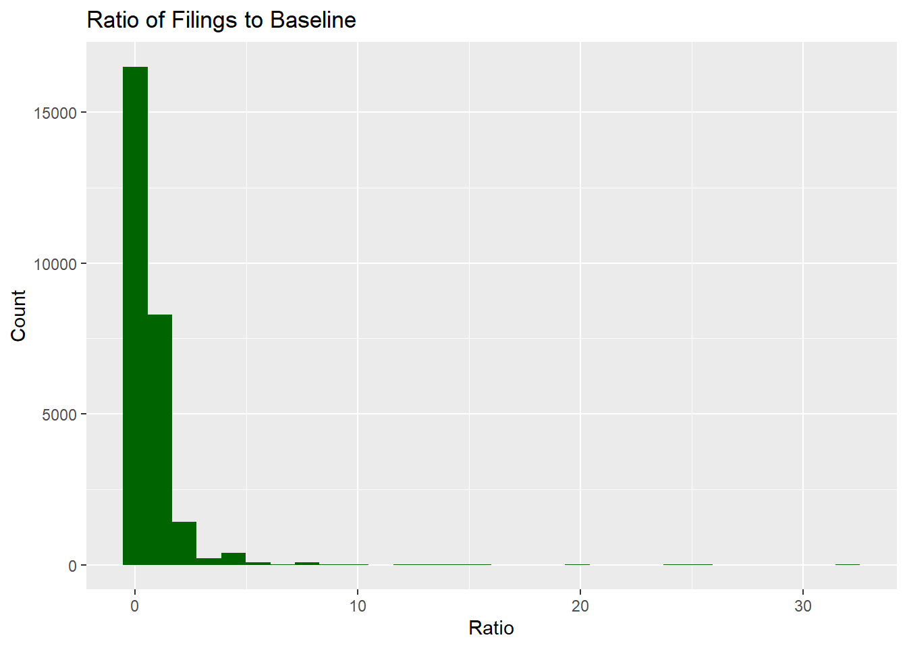
evictions %>%
group_by(racial_majority) %>%
summarise(mean_filings = mean(filings_2020, na.rm = TRUE)) %>%
ggplot(aes(racial_majority, mean_filings, fill = racial_majority)) +
geom_col() +
labs(
title = "Average Monthly Eviction Filings by Racial-Majority Tract",
x = "Racial Majority Group",
y = "Average Monthly Filings"
) +
theme_minimal() +
theme(legend.position = "none")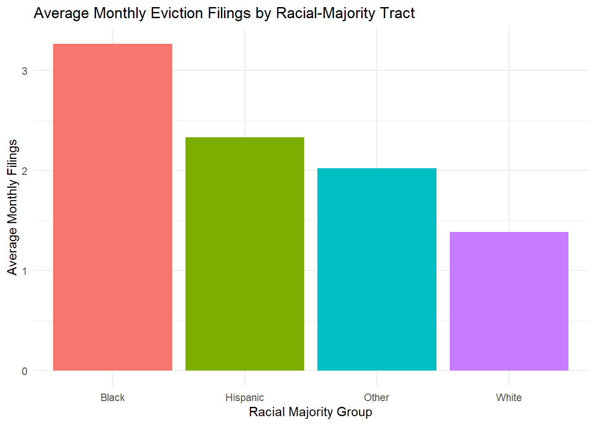
evictions %>%
group_by(month_date, racial_majority) %>%
summarise(total_filings = sum(filings_2020, na.rm = TRUE), .groups = "drop") %>%
ggplot(aes(month_date, total_filings, color = racial_majority)) +
geom_line() +
labs(title = "Eviction Filings Over Time by Racial-Majority Tract",
x = "Date",
y = "Total Filings",
color = "Racial Majority") +
theme_minimal()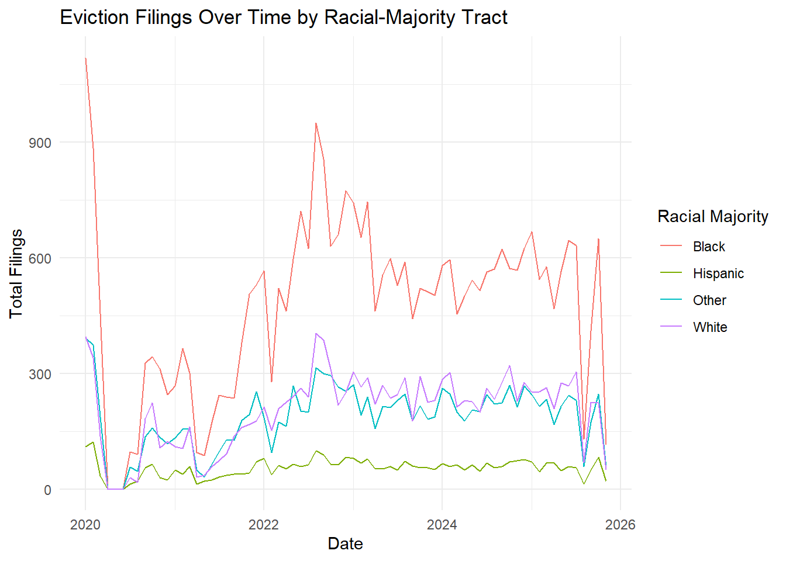
Rates of evictions in majority-Black census tracts are consistently higher than those of majority-White census tracts. While majority-Hispanic census tracts appear to have lower eviction totals on average compared to majority-White census tracts, it is important to note that there are significantly fewer majority-Hispanic census tracts within the dataset (Hispanic = 5.6%, White = 36.0%, Black = 35.8%, Other = 22.6%), which obscures potentially high rates of Hispanic household evictions in census tracts where other race categories dominate.
Source: https://opendataphilly.org/datasets/crime-incidents/
Eviction can perpetuate cycles of crime, poverty, and disinvestment. Communities of color and low-income neighborhoods face the biggest risk of eviction, largely because they historically and intentionally have been excluded from amenity-rich neighborhoods, denied capital, and displaced by redevelopment projects. We therefore look to crime reports as having a potential spatial relationship with eviction hot spots.
# Path to the main directory that contains the crimeXXXX folders
crime_main_dir <- "./data/crime/"
# 1. Find all subdirectories matching "crimeXXXX"
crime_subdirs <- list.dirs(crime_main_dir, full.names = TRUE, recursive = FALSE)
# 2. Find all .shp files inside those directories
crime_files <- list.files(crime_subdirs, pattern = "\\.shp$", full.names = TRUE)
# 3. Read all shapefiles into a list
crime_list <- lapply(crime_files, function(x) {
st_read(x, quiet = T) %>%
st_transform(2272)
}) %>% do.call(rbind, .)
crime <- crime_list %>% filter(!if_any(c('point_x', 'point_y'), is.na))# join tract geoid to crimes and filter out those not in Philly
crime_tract <- st_join(crime, tracts, join = st_intersects) %>%
filter(!is.na(GEOID))
# create a month/year column
crime_tract <- crime_tract %>%
mutate(month = format(dispatch_d, format = "%m/%Y"))
# summarize by the number of each type of crime per census tract per month
crime_cnts <- crime_tract %>%
st_drop_geometry() %>%
group_by(GEOID, month) %>%
summarise(count = n()) %>%
ungroup() %>%
complete(data = ., GEOID, month, fill = list(count = 0))Crimes were spatially joined to census tracts, and counts of crimes per census tract were calculated based on geoid. While no crime categories were excluded or given greater/lesser weight compared to others, future modeling efforts could perform further data transformations to improve the predictive potential of this dataset.
# Fix date format
crime_cnts <- crime_cnts %>%
mutate(
month_date = as.Date(paste0("01/", month), format = "%d/%m/%Y"),
year = lubridate::year(month_date)
)
# Crimes Over Time in Philadelphia
crime_cnts %>%
group_by(month_date) %>%
summarise(total_crime = sum(count)) %>%
ggplot(aes(month_date, total_crime)) +
geom_line(color = "firebrick") +
labs(
title = "Total Crime Over Time (Citywide)",
x = "Month",
y = "Incidents"
) +
theme_minimal()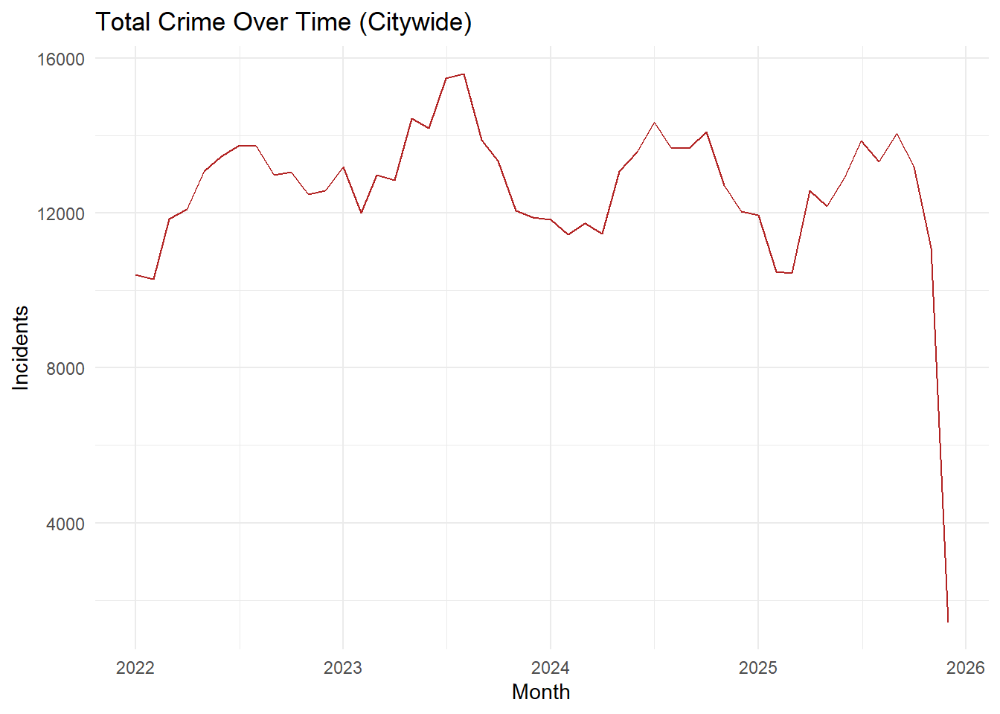
crime_totals <- crime_cnts %>%
group_by(GEOID) %>%
summarise(total_crime = sum(count))
ggplot(crime_totals, aes(total_crime)) +
geom_histogram(bins = 30, fill = "steelblue", color = "white") +
labs(
title = "Distribution of Total Crime Counts Across Census Tracts",
x = "Total Crime (2022–2025)",
y = "Number of Tracts"
) +
theme_minimal()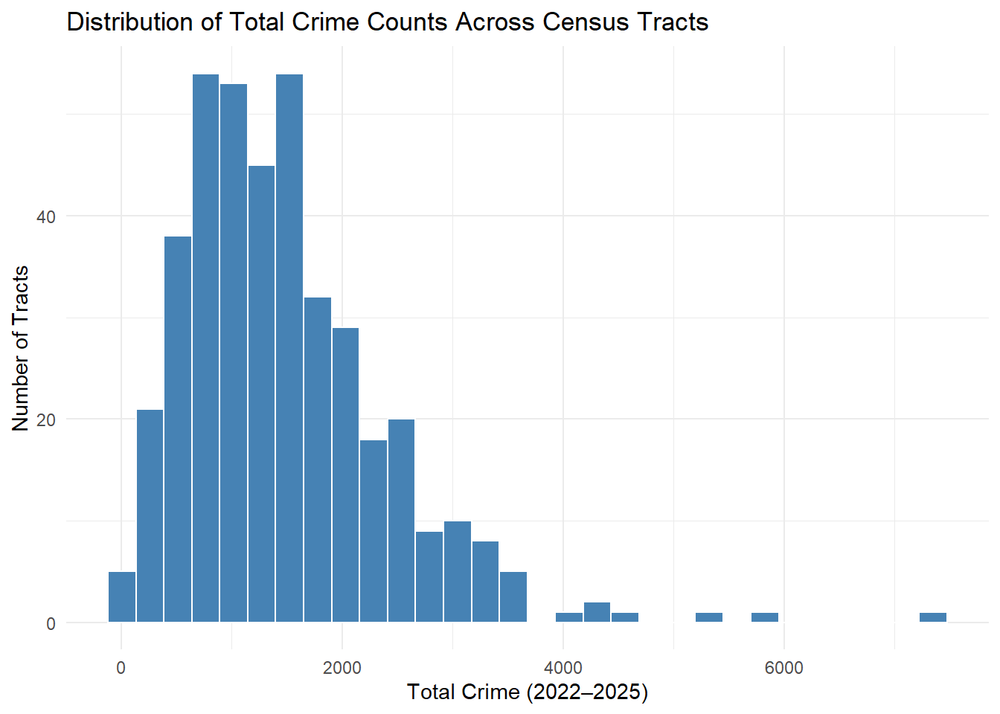
#Yearly Crime
crime_yearly <- crime_cnts %>%
group_by(GEOID, year) %>%
summarise(total_crime = sum(count), .groups = "drop") %>%
left_join(tracts, by = "GEOID") %>%
st_as_sf()
ggplot(crime_yearly) +
geom_sf(aes(fill = total_crime),
color = "grey80",
linewidth = 0.1) +
facet_wrap(~ year) +
scale_fill_viridis_c(na.value = "grey95") +
labs(
title = "Crime Counts by Census Tract (Annual)",
subtitle = "Exploratory spatial analysis",
fill = "Crime count"
) +
theme_void()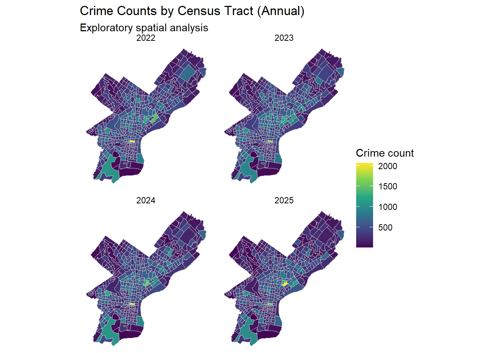
# Census tracts with the most crime
crime_totals_ranked <- crime_cnts %>%
group_by(GEOID) %>%
summarise(total_crime = sum(count)) %>%
arrange(desc(total_crime))
kable(head(crime_totals_ranked, 10), col.names = c('Tract', 'Crime Count (2022-2025)'))| Tract | Crime Count (2022-2025) |
|---|---|
| 42101000500 | 7347 |
| 42101017800 | 5751 |
| 42101017701 | 5239 |
| 42101017702 | 4629 |
| 42101038200 | 4402 |
| 42101011100 | 4327 |
| 42101980901 | 4099 |
| 42101019200 | 3668 |
| 42101029800 | 3587 |
| 42101030000 | 3490 |
# Total crime counts per census tract from 2022-2025
crime_map <- tracts %>% left_join(crime_totals_ranked, by = "GEOID")
ggplot(crime_map) +
geom_sf(aes(fill = total_crime),
color = "grey80",
linewidth = 0.1) +
scale_fill_viridis_c(na.value = "grey95") +
labs(
title = "Total Crime by Census Tract",
subtitle = "2022-2025",
fill = "Crime count"
) +
theme_void()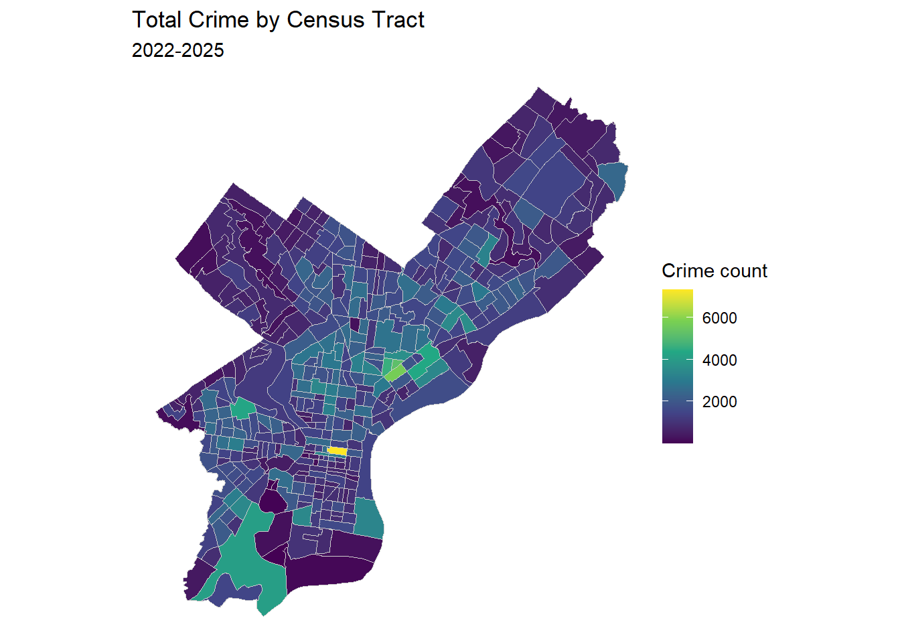
Crime does not seem to follow a strong temporal pattern, though there does seem to be slight seasonal fluctuations with more crime happening in winter months than summer months. Crime totals from 2022-2025 follow a slight right-skewed distribution. Crime is most densely concentrated in Center City Philadelphia, as well as in the Kensington area and near the Philadelphia International Airport. Please note that crime reports correlate strongly with patterns of policing and areas with greater population density where more eyes are consistently on the streets, which may influence many of these spatial patterns.
Source: https://opendataphilly.org/datasets/market-value-assessment/
The Philadelphia Market Value Analysis, performed by the Reinvestment Fund, seeks to inform and evaluate policy, programs, and investments across the US, with their Philadelphia study for 2023 producing a tool to identify and understand real estate markets at the census block group level in the city. One of their most prominent products is their Market Categories (nine in total, labeled as A through I), determined from a combination of Property Value & Investment, Distress & Vacancy, and Neighborhood & Housing Characteristics (Reinvestment Fund, 2023). Block groups with a market category of A are generally more affluent, with more stable housing markets, while a category of I represents volatile and lagging housing markets.
# read in results of
mva <- st_read('./data/mva_2023.geojson', quiet = T) %>%
st_transform(2272)
# the data is at the block group level
# GEOID (12 digits) = tract (11 digits) + block grp (1 digit)
mva <- mva %>%
mutate(GEOID = substr(geoid, 1, 11),
clusterletter = ifelse(clusterletter == " ", NA, clusterletter))
# determine the dominant rank within a census tract
mva_ranks <- mva %>%
st_drop_geometry() %>%
group_by(GEOID) %>%
summarise(
rank = {
x <- na.omit(clusterletter) # remove NA
if (length(x) == 0) {
NA_character_ # if no letters, return NA
} else {
tbl <- table(x)
max_letters <- names(tbl)[tbl == max(tbl)]
sort(max_letters)[1]
}
},
.groups = "drop"
)Since market categories were determined at the census block group level, instead of the census tract level, we needed to approach aggregating this metric in such a way that the dominant market category would be representative of all neighborhoods within each tract, which does reduce the overall accuracy of this predictor. The logic chosen was to assign tracts the most frequent market category within them, and if multiple categories were present at the same frequency the highest frequency would be assigned.
mva_ranks %>%
summarise(
n_tracts = n_distinct(GEOID),
n_missing = sum(is.na(rank)),
n_categories = n_distinct(rank, na.rm = TRUE)
) %>% kable(col.names = c('Tracts', 'Tracts Missing a Category', 'Categories'))| Tracts | Tracts Missing a Category | Categories |
|---|---|---|
| 408 | 27 | 9 |
kable(table(mva_ranks$rank), col.names = c('Market Category', 'Frequency'))| Market Category | Frequency |
|---|---|
| A | 49 |
| B | 47 |
| C | 67 |
| D | 11 |
| E | 54 |
| F | 74 |
| G | 45 |
| H | 12 |
| I | 22 |
kable(prop.table(table(mva_ranks$rank)) %>% sort(decreasing = T),
col.names = c('Market Category', "Proportion"),
digits = 3)| Market Category | Proportion |
|---|---|
| F | 0.194 |
| C | 0.176 |
| E | 0.142 |
| A | 0.129 |
| B | 0.123 |
| G | 0.118 |
| I | 0.058 |
| H | 0.031 |
| D | 0.029 |
# Most common MVA categories
ggplot(mva_ranks, aes(rank)) +
geom_bar(fill = "steelblue") +
labs(
title = "Distribution of MVA Cluster Categories",
x = "MVA Cluster",
y = "Number of Census Tracts"
) +
theme_minimal()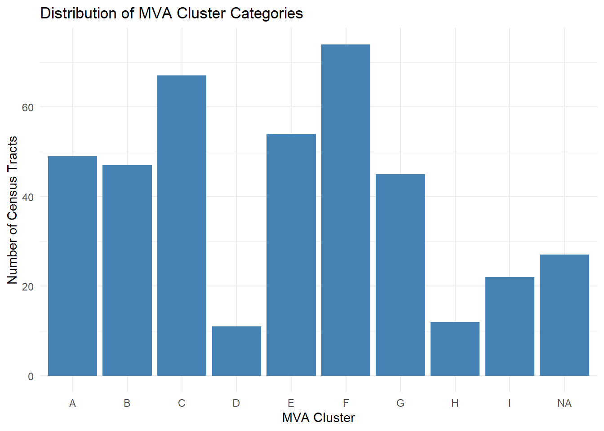
# MVA dominant cluster by tract
mva_ranks_sf <- tracts %>%
left_join(mva_ranks, by = "GEOID")
ggplot(mva_ranks_sf) +
geom_sf(aes(fill = rank),
color = "grey80",
linewidth = 0.1) +
scale_fill_brewer(palette = "Spectral", direction = -1, na.value = "grey90") +
labs(
title = "Market Value Analysis (MVA) — Dominant Cluster by Tract",
subtitle = "Exploratory spatial visualization",
fill = "Cluster"
) +
theme_void()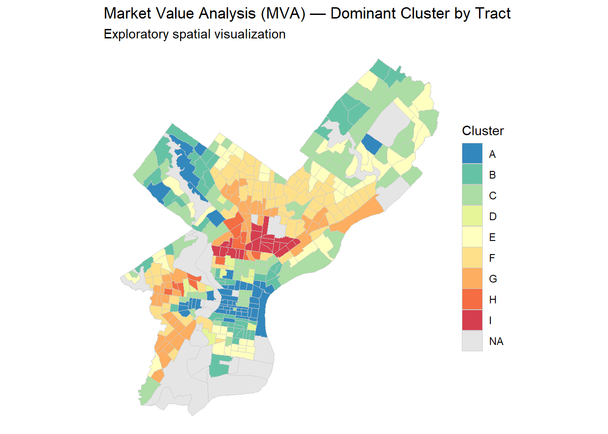
Rank F (5th of 9) is the most frequent Market Category in Philadelphia at 19.4% of tracts with Market Category ranks, while Rank D (4th of 9) is the least frequent Market Category at 2.9% of tracts. Tracts with no Market Category assigned due to a lack of housing or sufficient data account for 27 tracts, or 6.6% of all tracts in Philadelphia. High ranking census tracts are typically located in Center City and Germantown, while the lowest-ranked census tracts are located in North Philadelphia.
Source: https://opendataphilly.org/datasets/housing-counseling-agencies/
It is possible that Housing Counseling Agencies (HCAs), which in Philadelphia predominately assist low- and moderate-income people with mortgage counseling, default and delinquency counseling, and tenant support and housing consumer education, might have an impact on reducing the number of evictions within a region (DHCD, 2025). Since transportation costs and distance are a strong indicator of access to resources in Philadelphia, we calculated the average (k-nearest neighbor) distance from each census tract’s centroid (center) to the nearest one and nearest three HCA locations.
# create k-nearest neighbors function
get_knn_distance <- function(dist_matrix, k) {
apply(dist_matrix, 1, function(distances) {
mean(as.numeric(sort(distances)[1:k]))
})
}# load housing counseling agency locations
hca <- st_read('./data/HousingCounselingAgencies.geojson', quiet = T) %>%
st_transform(2272)
# create centroids for each tract to calculate distances
tracts_cent <- tracts %>%
st_centroid()
# claculate distance matrix
hca_distmatrix <- st_distance(tracts_cent, hca)
# distance to the nearest 1 and nearest 3 HCAs
hca_dist <- tracts %>%
mutate(dist_1hca = get_knn_distance(hca_distmatrix, k = 1),
dist_3hca = get_knn_distance(hca_distmatrix, k = 3))ggplot() +
geom_sf(data = tracts, color = 'grey75', fill = NA) +
geom_sf(data = hca, color = 'purple4', size = 2) +
labs(title = "Housing Counseling Agency Locations in Philadelphia") +
theme_void()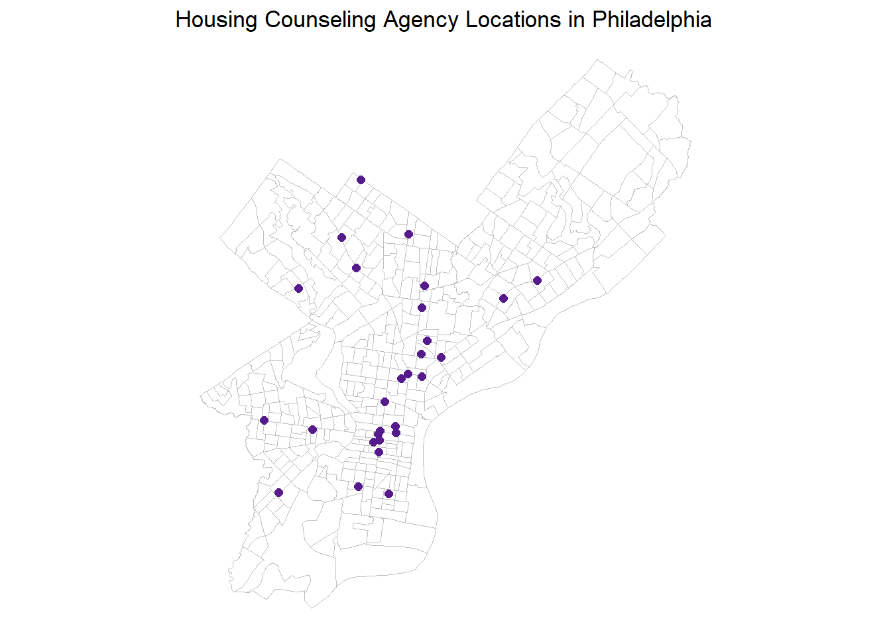
# Histogram Distance to nearest HCA
ggplot(hca_dist, aes(dist_1hca)) +
geom_histogram(bins = 40, fill = "purple", color = "white") +
theme_minimal() +
labs(
title = "Distribution of Distance to Nearest HCA",
x = "Distance (meters)",
y = "Number of Census Tracts"
)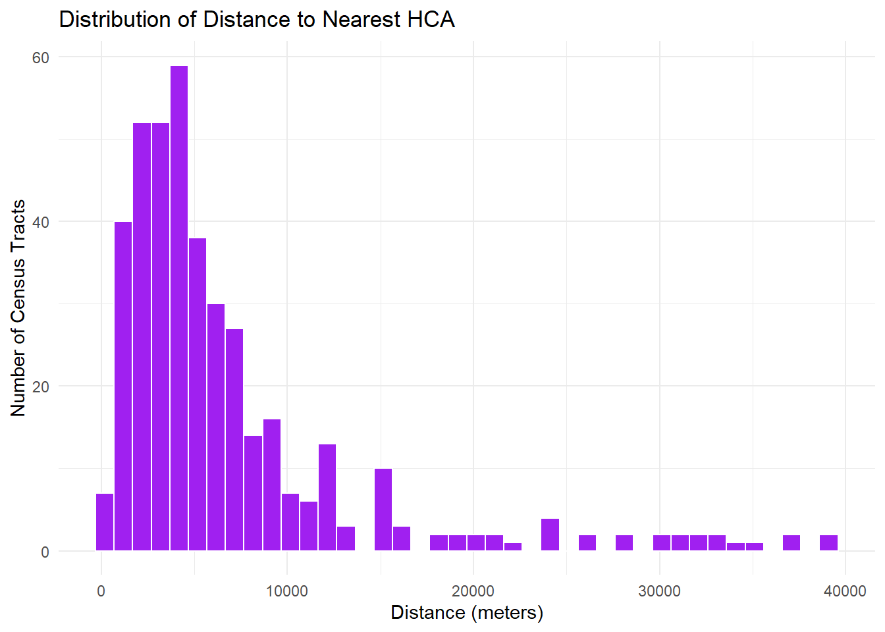
# Histogram Distance to nearest 3 HCA's
ggplot(hca_dist, aes(dist_3hca)) +
geom_histogram(bins = 40, fill = "darkgreen", color = "white") +
theme_minimal() +
labs(
title = "Distribution of Distance to 3 Nearest HCAs",
x = "Distance (meters)",
y = "Number of Census Tracts"
)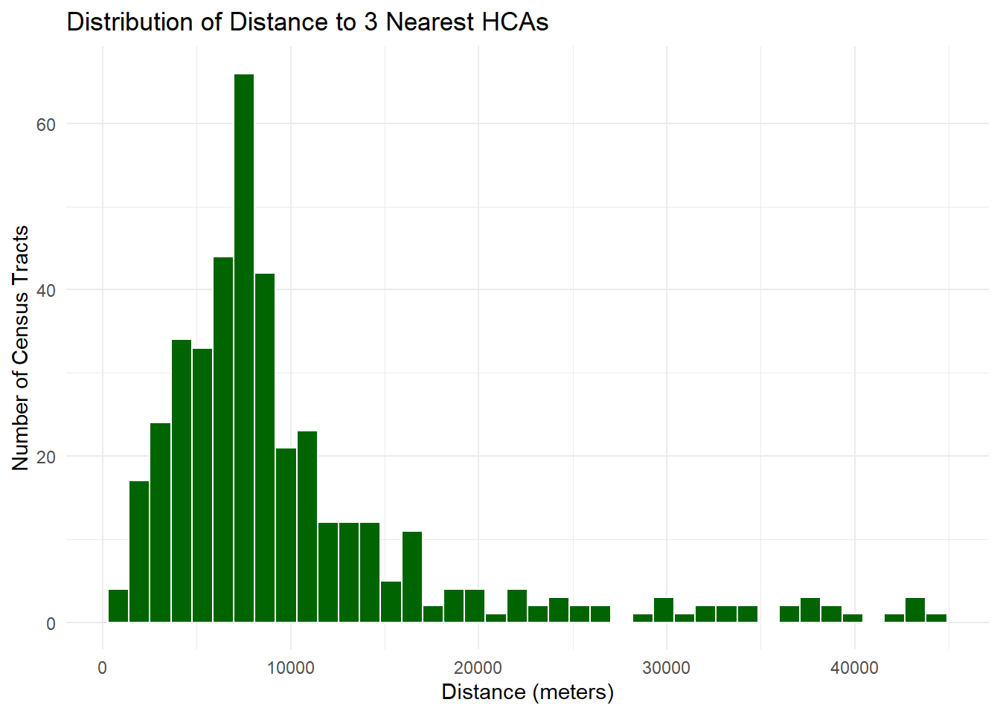
#Scatterplot dist_1 vs. dist_2
ggplot(hca_dist, aes(dist_1hca, dist_3hca)) +
geom_point(alpha = 0.6, color = "purple") +
theme_minimal() +
labs(
title = "Relationship Between 1-HCA and 3-HCA Distances",
x = "Distance to nearest HCA",
y = "Mean distance to 3 nearest HCAs"
)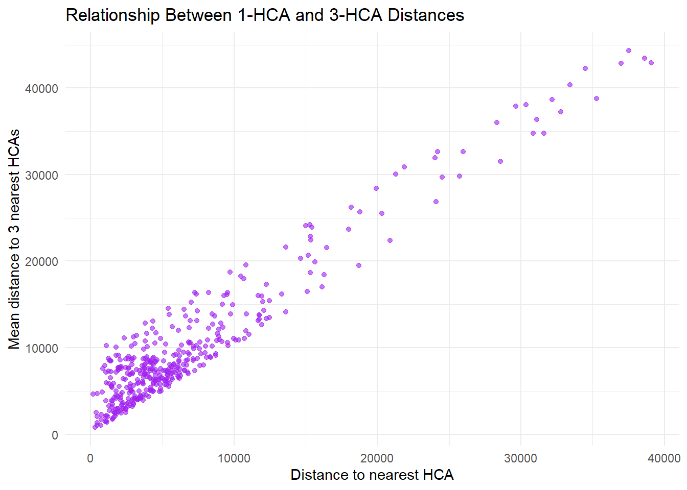
# Map dist to nearest HCA
ggplot(hca_dist) +
geom_sf(aes(fill = dist_1hca), color = "grey80") +
scale_fill_viridis_c() +
theme_void() +
labs(
title = "Distance to Nearest Housing Counseling Agency",
fill = "Meters"
)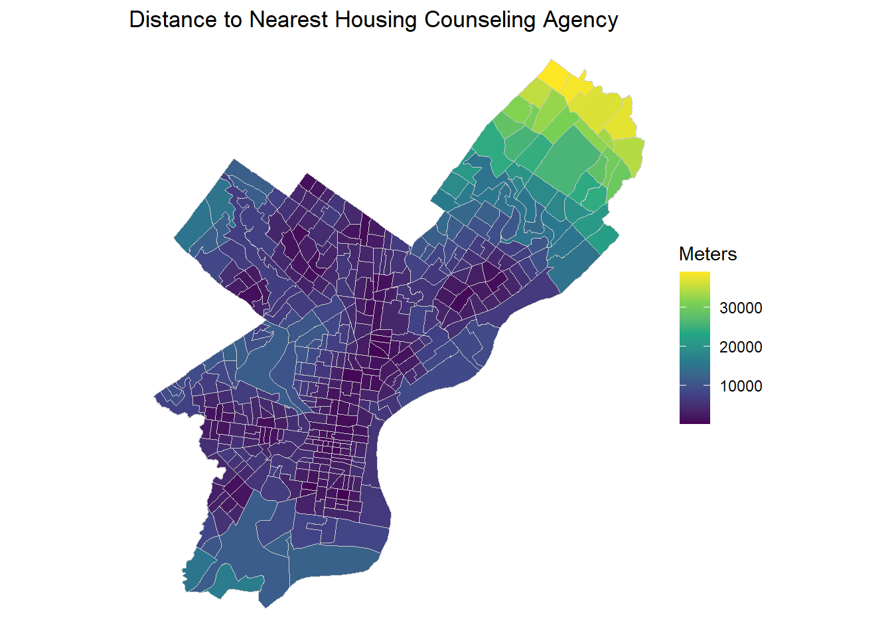
# Map dist to nearest 3 HCA
ggplot(hca_dist) +
geom_sf(aes(fill = dist_3hca), color = "grey80") +
scale_fill_viridis_c() +
theme_void() +
labs(
title = "Distance to 3 Nearest Housing Counseling Agencies",
fill = "Meters"
)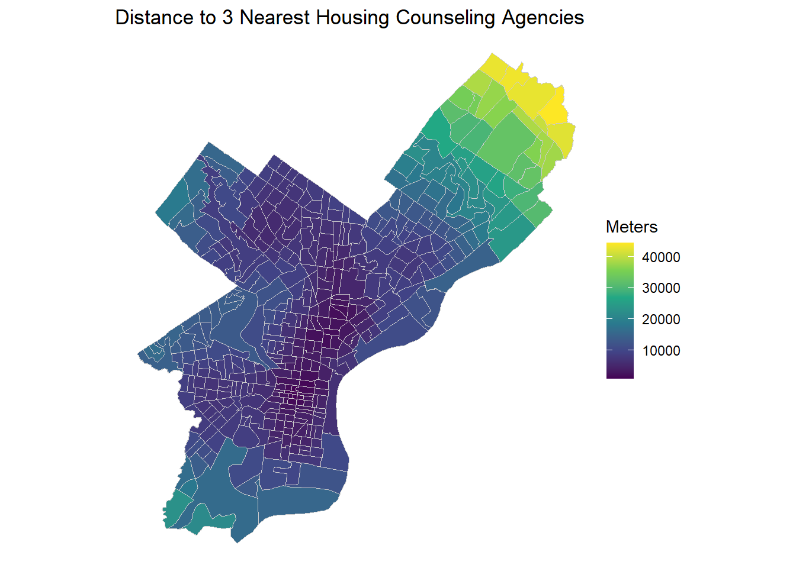
Housing Counseling Agency k-nearest neighbor distances to one agency and to three agencies are well correlated with one another due to how spatially correlated they are along Philadelphia’s North-South axis. While there are regions in Northeast Philadelphia that are far from any HCA, it’s likely that there may be other HCAs in neighboring Montgomery and Bucks Counties that could fill this access gap. This does produce a gradient of distances to those far-northeastern census tracts, however, which could artificially indicate a lack of access in Northeast Philadelphia.
Source: https://data.census.gov/
Three census tract demographics were chosen as neighborhood indicators: non-white percent, proportion of family households, and the ratio of units to the number of households. These were intended as markers of the racial composition and housing characteristics of a neighborhood.
# create a vector of years to pull from the census
years <- c(2020:2023)
# save vars and their column names to pull
vars <- c('pop_tot' = 'B01003_001', # total tract population
'pop_white' = 'B02001_002', # white population (for %-non-white calc)
'units_tot' = 'B25001_001', # total housing units
'hh_tot' = 'B11001_001', # total households
'hh_fam' = 'B11001_002') # family households)
# pull demographic variables for all specified years and add a year column
demo_vars <- map_df(years, function(y) {
get_acs(
geography = "tract",
variables = vars,
year = y,
survey = "acs5",
output = 'wide',
state = fips_pa,
county = fips_phl,
progress_bar = F
) %>%
mutate(year_lag_census = y)
})# isolate evictions in 2022 or later, removing unnecessary columns
evictions_trim <- evictions %>% filter(my(month) >= '2022-01-01') %>%
select(-c(type, last_updated))
data_1 <- left_join(evictions_trim, crime_cnts, by = c('GEOID', 'month'))
data_2 <- left_join(data_1, hca_dist %>% st_drop_geometry(), by = 'GEOID')
data_3 <- left_join(data_2, mva_ranks, by = 'GEOID')
data_model <- left_join(data_3, demo_vars, by = c("GEOID", "year_lag_census")
)Building complexity over multiple models
data_model <- data_model %>%
mutate(
month_date = as.Date(paste0("01/", month), format = "%d/%m/%Y")
) %>%
arrange(GEOID, month_date) %>%
group_by(GEOID) %>%
mutate(
lag_1 = lag(filings_2020, 1),
lag_2 = lag(filings_2020, 2)
) %>%
ungroup()# split date
split_date <- as.Date("2024-01-01")
# Ensure month_date is a proper date
data_model <- data_model %>%
mutate(month_date = as.Date(month_date))
# Temporal split
train_data <- data_model %>%
filter(month_date < split_date)
test_data <- data_model %>%
filter(month_date >= split_date)
# Check split sizes and ranges
nrow(train_data)[1] 9792nrow(test_data)[1] 9384summary(train_data$month_date) Min. 1st Qu. Median Mean 3rd Qu. Max.
"2022-01-01" "2022-06-23" "2022-12-16" "2022-12-16" "2023-06-08" "2023-12-01" summary(test_data$month_date) Min. 1st Qu. Median Mean 3rd Qu. Max.
"2024-01-01" "2024-06-01" "2024-12-01" "2024-11-30" "2025-06-01" "2025-11-01" model_0 <- lm(
filings_2020 ~ filings_avg + filings_avg_prepandemic_baseline,
data = train_data
)
summary(model_0)
Call:
lm(formula = filings_2020 ~ filings_avg + filings_avg_prepandemic_baseline,
data = train_data)
Residuals:
Min 1Q Median 3Q Max
-17.081 -0.980 -0.185 0.742 73.896
Coefficients:
Estimate Std. Error t value Pr(>|t|)
(Intercept) 0.137181 0.039578 3.466 0.00053 ***
filings_avg 0.680585 0.012799 53.173 < 2e-16 ***
filings_avg_prepandemic_baseline 0.192836 0.008525 22.621 < 2e-16 ***
---
Signif. codes: 0 '***' 0.001 '**' 0.01 '*' 0.05 '.' 0.1 ' ' 1
Residual standard error: 2.664 on 9789 degrees of freedom
Multiple R-squared: 0.4777, Adjusted R-squared: 0.4776
F-statistic: 4476 on 2 and 9789 DF, p-value: < 2.2e-16# Model 1: baseline + ACS demographic predictors
train_data <- train_data %>%
mutate(
pct_nonwhite = 1 - (pop_whiteE / pop_totE),
hh_fam_share = hh_famE / hh_totE,
units_per_hh = units_totE / hh_totE
)
test_data <- test_data %>%
mutate(
pct_nonwhite = 1 - (pop_whiteE / pop_totE),
hh_fam_share = hh_famE / hh_totE,
units_per_hh = units_totE / hh_totE
)model_1 <- lm(
filings_2020 ~
filings_avg_prepandemic_baseline + # baseline anchor
pop_totE +
pct_nonwhite +
hh_totE +
hh_fam_share +
units_totE +
units_per_hh,
data = train_data
)
summary(model_1)
Call:
lm(formula = filings_2020 ~ filings_avg_prepandemic_baseline +
pop_totE + pct_nonwhite + hh_totE + hh_fam_share + units_totE +
units_per_hh, data = train_data)
Residuals:
Min 1Q Median 3Q Max
-18.878 -1.445 -0.455 0.896 73.673
Coefficients:
Estimate Std. Error t value Pr(>|t|)
(Intercept) -2.763e-01 9.781e-01 -0.283 0.777548
filings_avg_prepandemic_baseline 4.505e-01 8.970e-03 50.221 < 2e-16 ***
pop_totE -1.109e-04 4.577e-05 -2.422 0.015445 *
pct_nonwhite 7.633e-01 1.331e-01 5.733 1.02e-08 ***
hh_totE -5.246e-05 6.701e-04 -0.078 0.937597
hh_fam_share -9.747e-01 2.694e-01 -3.617 0.000299 ***
units_totE 6.127e-04 5.812e-04 1.054 0.291801
units_per_hh 5.968e-01 8.292e-01 0.720 0.471705
---
Signif. codes: 0 '***' 0.001 '**' 0.01 '*' 0.05 '.' 0.1 ' ' 1
Residual standard error: 3.071 on 9304 degrees of freedom
(480 observations deleted due to missingness)
Multiple R-squared: 0.3196, Adjusted R-squared: 0.3191
F-statistic: 624.3 on 7 and 9304 DF, p-value: < 2.2e-16train_data <- train_data %>%
mutate(crime_cnt = as.numeric(count))
test_data <- test_data %>%
mutate(crime_cnt = as.numeric(count))model_2 <- lm(
filings_2020 ~
filings_avg_prepandemic_baseline +
pop_totE +
pct_nonwhite +
hh_totE +
hh_fam_share +
units_totE +
units_per_hh +
crime_cnt,
data = train_data
)
summary(model_2)
Call:
lm(formula = filings_2020 ~ filings_avg_prepandemic_baseline +
pop_totE + pct_nonwhite + hh_totE + hh_fam_share + units_totE +
units_per_hh + crime_cnt, data = train_data)
Residuals:
Min 1Q Median 3Q Max
-18.787 -1.436 -0.449 0.901 73.768
Coefficients:
Estimate Std. Error t value Pr(>|t|)
(Intercept) -3.595e-01 9.782e-01 -0.368 0.713236
filings_avg_prepandemic_baseline 4.482e-01 9.000e-03 49.802 < 2e-16 ***
pop_totE -1.337e-04 4.645e-05 -2.878 0.004014 **
pct_nonwhite 7.094e-01 1.344e-01 5.277 1.34e-07 ***
hh_totE 2.019e-04 6.758e-04 0.299 0.765079
hh_fam_share -8.999e-01 2.706e-01 -3.325 0.000887 ***
units_totE 3.832e-04 5.866e-04 0.653 0.513564
units_per_hh 6.160e-01 8.289e-01 0.743 0.457427
crime_cnt 4.989e-03 1.756e-03 2.841 0.004501 **
---
Signif. codes: 0 '***' 0.001 '**' 0.01 '*' 0.05 '.' 0.1 ' ' 1
Residual standard error: 3.07 on 9303 degrees of freedom
(480 observations deleted due to missingness)
Multiple R-squared: 0.3202, Adjusted R-squared: 0.3196
F-statistic: 547.7 on 8 and 9303 DF, p-value: < 2.2e-16train_data <- train_data %>%
mutate(
dist_1hca = as.numeric(dist_1hca),
dist_3hca = as.numeric(dist_3hca)
)
test_data <- test_data %>%
mutate(
dist_1hca = as.numeric(dist_1hca),
dist_3hca = as.numeric(dist_3hca)
)model_3 <- lm(
filings_2020 ~
filings_avg_prepandemic_baseline +
pop_totE +
pct_nonwhite +
hh_totE +
hh_fam_share +
units_totE +
units_per_hh +
crime_cnt +
dist_1hca +
dist_3hca,
data = train_data
)
summary(model_3)
Call:
lm(formula = filings_2020 ~ filings_avg_prepandemic_baseline +
pop_totE + pct_nonwhite + hh_totE + hh_fam_share + units_totE +
units_per_hh + crime_cnt + dist_1hca + dist_3hca, data = train_data)
Residuals:
Min 1Q Median 3Q Max
-18.308 -1.436 -0.457 0.907 74.020
Coefficients:
Estimate Std. Error t value Pr(>|t|)
(Intercept) 1.462e-02 9.789e-01 0.015 0.98809
filings_avg_prepandemic_baseline 4.370e-01 9.147e-03 47.776 < 2e-16 ***
pop_totE -1.327e-04 4.665e-05 -2.846 0.00444 **
pct_nonwhite 9.602e-01 1.409e-01 6.812 1.02e-11 ***
hh_totE -3.357e-04 6.802e-04 -0.494 0.62165
hh_fam_share -1.485e+00 2.847e-01 -5.215 1.87e-07 ***
units_totE 8.394e-04 5.900e-04 1.423 0.15489
units_per_hh 1.589e-01 8.310e-01 0.191 0.84837
crime_cnt 7.133e-03 1.784e-03 3.998 6.43e-05 ***
dist_1hca -1.535e-05 1.578e-05 -0.973 0.33083
dist_3hca 4.287e-05 1.407e-05 3.047 0.00232 **
---
Signif. codes: 0 '***' 0.001 '**' 0.01 '*' 0.05 '.' 0.1 ' ' 1
Residual standard error: 3.064 on 9301 degrees of freedom
(480 observations deleted due to missingness)
Multiple R-squared: 0.3233, Adjusted R-squared: 0.3226
F-statistic: 444.4 on 10 and 9301 DF, p-value: < 2.2e-16train_data <- train_data %>%
mutate(rank = factor(rank))
test_data <- test_data %>%
mutate(rank = factor(rank))
test_data$rank <- factor(test_data$rank, levels = levels(train_data$rank))model_4 <- lm(
filings_2020 ~
filings_avg_prepandemic_baseline +
pop_totE +
pct_nonwhite +
hh_totE +
hh_fam_share +
units_totE +
units_per_hh +
crime_cnt +
dist_1hca +
dist_3hca +
rank,
data = train_data
)
summary(model_4)
Call:
lm(formula = filings_2020 ~ filings_avg_prepandemic_baseline +
pop_totE + pct_nonwhite + hh_totE + hh_fam_share + units_totE +
units_per_hh + crime_cnt + dist_1hca + dist_3hca + rank,
data = train_data)
Residuals:
Min 1Q Median 3Q Max
-17.270 -1.422 -0.455 0.929 73.950
Coefficients:
Estimate Std. Error t value Pr(>|t|)
(Intercept) -2.610e+00 1.187e+00 -2.198 0.027958 *
filings_avg_prepandemic_baseline 4.447e-01 9.506e-03 46.783 < 2e-16 ***
pop_totE -1.280e-04 5.185e-05 -2.469 0.013557 *
pct_nonwhite 6.810e-01 1.774e-01 3.838 0.000125 ***
hh_totE 1.684e-03 7.927e-04 2.124 0.033662 *
hh_fam_share -1.948e+00 3.521e-01 -5.533 3.23e-08 ***
units_totE -1.085e-03 6.951e-04 -1.560 0.118724
units_per_hh 2.889e+00 1.027e+00 2.812 0.004927 **
crime_cnt 5.613e-03 1.917e-03 2.929 0.003411 **
dist_1hca -2.502e-05 1.704e-05 -1.469 0.141926
dist_3hca 4.947e-05 1.549e-05 3.193 0.001411 **
rankB -5.996e-02 1.376e-01 -0.436 0.663059
rankC 1.793e-01 1.379e-01 1.301 0.193429
rankD -9.238e-01 2.373e-01 -3.893 9.97e-05 ***
rankE 1.230e-01 1.592e-01 0.772 0.439935
rankF 5.075e-01 1.730e-01 2.933 0.003367 **
rankG 6.366e-02 1.902e-01 0.335 0.737786
rankH 9.585e-01 2.413e-01 3.972 7.17e-05 ***
rankI 4.009e-01 2.087e-01 1.921 0.054765 .
---
Signif. codes: 0 '***' 0.001 '**' 0.01 '*' 0.05 '.' 0.1 ' ' 1
Residual standard error: 3.062 on 9125 degrees of freedom
(648 observations deleted due to missingness)
Multiple R-squared: 0.3242, Adjusted R-squared: 0.3228
F-statistic: 243.2 on 18 and 9125 DF, p-value: < 2.2e-16model_5 <- lm(
filings_2020 ~
filings_avg_prepandemic_baseline +
pop_totE + pct_nonwhite + hh_totE + hh_fam_share +
units_totE + units_per_hh +
crime_cnt +
dist_1hca + dist_3hca +
rank +
lag_1 +
lag_2,
data = train_data
)
summary(model_5)
Call:
lm(formula = filings_2020 ~ filings_avg_prepandemic_baseline +
pop_totE + pct_nonwhite + hh_totE + hh_fam_share + units_totE +
units_per_hh + crime_cnt + dist_1hca + dist_3hca + rank +
lag_1 + lag_2, data = train_data)
Residuals:
Min 1Q Median 3Q Max
-20.732 -1.309 -0.360 0.893 77.036
Coefficients:
Estimate Std. Error t value Pr(>|t|)
(Intercept) -1.968e+00 1.180e+00 -1.668 0.09536 .
filings_avg_prepandemic_baseline 2.751e-01 1.104e-02 24.906 < 2e-16 ***
pop_totE -4.740e-05 5.144e-05 -0.922 0.35680
pct_nonwhite 4.636e-01 1.759e-01 2.636 0.00842 **
hh_totE 1.406e-03 7.853e-04 1.790 0.07343 .
hh_fam_share -1.423e+00 3.498e-01 -4.068 4.79e-05 ***
units_totE -1.051e-03 6.890e-04 -1.525 0.12720
units_per_hh 2.264e+00 1.022e+00 2.216 0.02675 *
crime_cnt 1.581e-03 1.879e-03 0.842 0.39998
dist_1hca -1.677e-05 1.686e-05 -0.995 0.31985
dist_3hca 2.765e-05 1.534e-05 1.803 0.07146 .
rankB -5.266e-02 1.362e-01 -0.387 0.69898
rankC 1.664e-01 1.364e-01 1.220 0.22246
rankD -6.318e-01 2.350e-01 -2.689 0.00718 **
rankE 2.868e-02 1.575e-01 0.182 0.85555
rankF 3.364e-01 1.713e-01 1.964 0.04959 *
rankG 3.642e-02 1.882e-01 0.194 0.84655
rankH 6.140e-01 2.393e-01 2.566 0.01032 *
rankI 2.350e-01 2.069e-01 1.136 0.25604
lag_1 1.978e-01 1.052e-02 18.808 < 2e-16 ***
lag_2 1.953e-01 1.049e-02 18.611 < 2e-16 ***
---
Signif. codes: 0 '***' 0.001 '**' 0.01 '*' 0.05 '.' 0.1 ' ' 1
Residual standard error: 2.9 on 8361 degrees of freedom
(1410 observations deleted due to missingness)
Multiple R-squared: 0.4001, Adjusted R-squared: 0.3987
F-statistic: 278.8 on 20 and 8361 DF, p-value: < 2.2e-16# Generate predictions
test_data <- test_data %>%
mutate(
pred_0 = predict(model_0, newdata = .),
pred_1 = predict(model_1, newdata = .),
pred_2 = predict(model_2, newdata = .),
pred_3 = predict(model_3, newdata = .),
pred_4 = predict(model_4, newdata = .),
pred_5 = predict(model_5, newdata = .)
)
# Build MAE results table
mae_results <- tibble::tibble(
Model = c(
"0. Baseline",
"1. + Demographics",
"2. + Crime",
"3. + HCA Distance",
"4. + MVA Rank",
"5. + Lags"
),
MAE = c(
mean(abs(test_data$filings_2020 - test_data$pred_0), na.rm = TRUE),
mean(abs(test_data$filings_2020 - test_data$pred_1), na.rm = TRUE),
mean(abs(test_data$filings_2020 - test_data$pred_2), na.rm = TRUE),
mean(abs(test_data$filings_2020 - test_data$pred_3), na.rm = TRUE),
mean(abs(test_data$filings_2020 - test_data$pred_4), na.rm = TRUE),
mean(abs(test_data$filings_2020 - test_data$pred_5), na.rm = TRUE)
)
)
# Show table
knitr::kable(
mae_results,
digits = 3,
caption = "Mean Absolute Error by Model (Test Set)",
col.names = c("Model", "MAE (filings)")
)| Model | MAE (filings) |
|---|---|
| 0. Baseline | 1.382 |
| 1. + Demographics | 1.840 |
| 2. + Crime | 1.834 |
| 3. + HCA Distance | 1.832 |
| 4. + MVA Rank | 1.821 |
| 5. + Lags | 1.672 |
mae_results <- mae_results %>%
mutate(Model = factor(Model, levels = Model))
ggplot(mae_results, aes(x = Model, y = MAE)) +
geom_col() +
geom_text(aes(label = round(MAE, 2)), vjust = -0.3, size = 3) +
labs(
title = "Test-Set MAE by Model",
x = "Model",
y = "MAE (filings)"
) +
theme_minimal() +
theme(
axis.text.x = element_text(angle = 30, hjust = 1)
)
#testing
test_data <- test_data %>%
mutate(
pred_5 = predict(model_5, newdata = .),
resid_5 = filings_2020 - pred_5,
abs_resid_5 = abs(resid_5)
)
# Aggregate errors by tract
tract_errors <- test_data %>%
st_drop_geometry() %>%
group_by(GEOID) %>%
summarise(
MAE_5 = mean(abs_resid_5, na.rm = TRUE),
avg_filings = mean(filings_2020, na.rm = TRUE),
.groups = "drop"
) %>%
left_join(tracts, by = "GEOID") %>%
st_as_sf()
# Map 1: Prediction Errors (MAE)
p1 <- ggplot(tract_errors) +
geom_sf(aes(fill = MAE_5), color = NA) +
scale_fill_viridis_c(
option = "plasma",
name = "MAE\n(filings)"
) +
labs(
title = "Prediction Errors by Census Tract",
subtitle = "Mean Absolute Error (Model 5, Test Period)"
) +
theme_void() +
theme(
legend.position = "right",
plot.title = element_text(size = 14, face = "bold"),
plot.subtitle = element_text(size = 10)
)
# Map 2: Average Filings
p2 <- ggplot(tract_errors) +
geom_sf(aes(fill = avg_filings), color = NA) +
scale_fill_viridis_c(
option = "viridis",
name = "Avg Monthly\nFilings"
) +
labs(
title = "Average Eviction Filings by Census Tract",
subtitle = "Test Period Only"
) +
theme_void() +
theme(
legend.position = "right",
plot.title = element_text(size = 14, face = "bold"),
plot.subtitle = element_text(size = 10)
)
# Side-by-side
gridExtra::grid.arrange(p1, p2, ncol = 2)
#month_date is date
test_data <- test_data %>%
mutate(month_date = as.Date(month_date))
# prediction columns
pred_cols <- grep("^pred_", names(test_data), value = TRUE)
if (length(pred_cols) == 0) {
stop("No prediction columns found in test_data.
Make sure pred_0, pred_1, ..., pred_5 exist before running temporal error code.")
}
# Long-form table
temporal_errors_all <- test_data %>%
sf::st_drop_geometry() %>%
select(month_date, filings_2020, all_of(pred_cols)) %>%
pivot_longer(
cols = all_of(pred_cols),
names_to = "model_short",
values_to = "prediction"
) %>%
mutate(
abs_error = abs(filings_2020 - prediction),
model = dplyr::case_when(
model_short == "pred_0" ~ "0. Baseline",
model_short == "pred_1" ~ "1. + Demographics",
model_short == "pred_2" ~ "2. + Crime",
model_short == "pred_3" ~ "3. + HCA Distance",
model_short == "pred_4" ~ "4. + MVA Rank",
model_short == "pred_5" ~ "5. + Lags",
TRUE ~ model_short
)
)
# Temporal MAE by month & model
temporal_mae_all <- temporal_errors_all %>%
group_by(month_date, model) %>%
summarise(
MAE = mean(abs_error, na.rm = TRUE),
.groups = "drop"
)
# Plot MAE over time for all models
ggplot(temporal_mae_all, aes(x = month_date, y = MAE, color = model)) +
geom_line(linewidth = 1) +
geom_point(size = 1.4) +
labs(
title = "Temporal Prediction Errors by Model",
subtitle = "Mean Absolute Error (MAE) over time on test data",
x = "Month",
y = "MAE (filings)",
color = "Model"
) +
theme_minimal() +
theme(
axis.text.x = element_text(angle = 45, hjust = 1)
)
# Compute absolute residuals for Model 5
test_data <- test_data %>%
mutate(
resid_5 = filings_2020 - pred_5,
abs_resid_5 = abs(resid_5)
)
# Aggregate to tract level
tract_errors_demo <- test_data %>%
st_drop_geometry() %>%
group_by(GEOID) %>%
summarise(
MAE_5 = mean(abs_resid_5, na.rm = TRUE),
pct_nonwhite = mean(pct_nonwhite, na.rm = TRUE),
pop_tot = mean(pop_totE, na.rm = TRUE),
hh_fam_share = mean(hh_fam_share, na.rm = TRUE),
units_per_hh = mean(units_per_hh, na.rm = TRUE),
crime_cnt = mean(crime_cnt, na.rm = TRUE),
rank = first(rank),
.groups = "drop"
)p1 <- ggplot(tract_errors_demo, aes(x = pct_nonwhite, y = MAE_5)) +
geom_point(alpha = 0.5, color = "#3182bd") +
geom_smooth(method = "lm", se = FALSE, color = "red") +
labs(
title = "Prediction Error vs. Racial Composition",
x = "Percent Nonwhite",
y = "MAE (Model 5)"
) +
theme_minimal()
p2 <- ggplot(tract_errors_demo, aes(x = crime_cnt, y = MAE_5)) +
geom_point(alpha = 0.5, color = "#3182bd") +
geom_smooth(method = "lm", se = FALSE, color = "red") +
labs(
title = "Prediction Error vs. Crime Rate",
x = "Crime Count",
y = "MAE (Model 5)"
) +
theme_minimal()
p3 <- ggplot(tract_errors_demo, aes(x = units_per_hh, y = MAE_5)) +
geom_point(alpha = 0.5, color = "#3182bd") +
geom_smooth(method = "lm", se = FALSE, color = "red") +
labs(
title = "Prediction Error vs. Housing Stock Pressure",
x = "Units per Household",
y = "MAE (Model 5)"
) +
theme_minimal()
grid.arrange(p1, p2, p3, ncol = 2)`geom_smooth()` using formula = 'y ~ x'Warning: Removed 27 rows containing non-finite outside the scale range
(`stat_smooth()`).Warning: Removed 27 rows containing missing values or values outside the scale range
(`geom_point()`).`geom_smooth()` using formula = 'y ~ x'Warning: Removed 27 rows containing non-finite outside the scale range
(`stat_smooth()`).
Removed 27 rows containing missing values or values outside the scale range
(`geom_point()`).`geom_smooth()` using formula = 'y ~ x'Warning: Removed 27 rows containing non-finite outside the scale range
(`stat_smooth()`).
Removed 27 rows containing missing values or values outside the scale range
(`geom_point()`).
model_6 <- lm(
filings_2020 ~
filings_avg_prepandemic_baseline +
pct_nonwhite +
crime_cnt +
lag_1 + lag_2,
data = train_data
)
summary(model_6)
Call:
lm(formula = filings_2020 ~ filings_avg_prepandemic_baseline +
pct_nonwhite + crime_cnt + lag_1 + lag_2, data = train_data)
Residuals:
Min 1Q Median 3Q Max
-21.612 -1.276 -0.413 0.877 77.032
Coefficients:
Estimate Std. Error t value Pr(>|t|)
(Intercept) 0.229221 0.075367 3.041 0.00236 **
filings_avg_prepandemic_baseline 0.275718 0.010272 26.842 < 2e-16 ***
pct_nonwhite 0.328045 0.118235 2.775 0.00554 **
crime_cnt 0.003538 0.001576 2.245 0.02478 *
lag_1 0.208329 0.010357 20.114 < 2e-16 ***
lag_2 0.204220 0.010346 19.739 < 2e-16 ***
---
Signif. codes: 0 '***' 0.001 '**' 0.01 '*' 0.05 '.' 0.1 ' ' 1
Residual standard error: 2.899 on 8596 degrees of freedom
(1190 observations deleted due to missingness)
Multiple R-squared: 0.3984, Adjusted R-squared: 0.398
F-statistic: 1139 on 5 and 8596 DF, p-value: < 2.2e-16test_data$pred_6 <- predict(model_6, newdata = test_data)
mae_6 <- mean(abs(test_data$filings_2020 - test_data$pred_6), na.rm = TRUE)
mae_6[1] 1.665506sf_data <- data_model %>%
mutate(
pct_nonwhite = 1 - (pop_whiteE / pop_totE),
hh_fam_share = hh_famE / hh_totE,
units_per_hh = units_totE / hh_totE,
crime_cnt = as.numeric(count),
dist_1hca = as.numeric(dist_1hca),
dist_3hca = as.numeric(dist_3hca),
rank = factor(rank)
) %>%
filter(!is.na(filings_2020)) %>%
st_as_sf() # ensure it's sf# Get tract centroids and coordinates
centroids <- sf::st_centroid(sf_data)Warning: st_centroid assumes attributes are constant over geometriescoords <- sf::st_coordinates(centroids) # matrix with X, Y
set.seed(5746)
k_folds <- 5
km <- kmeans(coords, centers = k_folds, nstart = 25)
# fold
sf_data <- sf_data %>%
mutate(fold_id = km$cluster)
table(sf_data$fold_id)
1 2 3 4 5
4277 3149 3525 3055 5170 # Model 5: full + lags
form_5 <- filings_2020 ~
filings_avg_prepandemic_baseline +
pop_totE + pct_nonwhite + hh_totE + hh_fam_share +
units_totE + units_per_hh +
crime_cnt +
dist_1hca + dist_3hca +
rank +
lag_1 + lag_2
results_model5 <- purrr::map_df(1:5, function(f) {
train_set <- sf_data %>% filter(fold_id != f)
test_set <- sf_data %>% filter(fold_id == f)
mod5 <- lm(form_5, data = train_set)
test_set$pred5 <- predict(mod5, newdata = test_set)
tibble(
fold = f,
model = "Model 5",
MAE = mean(abs(test_set$filings_2020 - test_set$pred5), na.rm = TRUE)
)
})form_6 <- filings_2020 ~
filings_avg_prepandemic_baseline +
pct_nonwhite +
crime_cnt +
lag_1 + lag_2
results_model6 <- purrr::map_df(1:5, function(f) {
train_set <- sf_data %>% filter(fold_id != f)
test_set <- sf_data %>% filter(fold_id == f)
mod6 <- lm(form_6, data = train_set)
test_set$pred6 <- predict(mod6, newdata = test_set)
tibble(
fold = f,
model = "Model 6",
MAE = mean(abs(test_set$filings_2020 - test_set$pred6), na.rm = TRUE)
)
})spatial_results <- bind_rows(results_model5, results_model6)
spatial_results# A tibble: 10 × 3
fold model MAE
<int> <chr> <dbl>
1 1 Model 5 1.70
2 2 Model 5 1.84
3 3 Model 5 2.11
4 4 Model 5 1.82
5 5 Model 5 1.53
6 1 Model 6 1.72
7 2 Model 6 1.87
8 3 Model 6 2.04
9 4 Model 6 1.55
10 5 Model 6 1.40ggplot(spatial_results, aes(x = factor(fold), y = MAE, fill = model)) +
geom_col(position = "dodge") +
scale_fill_manual(
values = c(
"Model 5" = "#3182bd",
"Model 6" = "#31a354"
)
) +
labs(
title = "Spatial Cross-Validation MAE Across Folds",
subtitle = "Comparing Model 5 (full + lags) vs. Model 6 (reduced + lags)",
x = "Spatial Fold (k-means cluster)",
y = "MAE (filings)",
fill = "Model"
) +
theme_minimal(base_size = 13) +
theme(
legend.position = "top",
axis.text.x = element_text(size = 11)
)